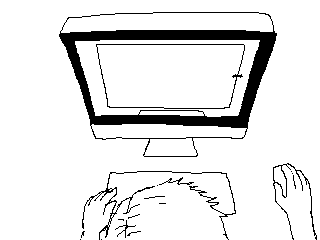

Controls
- Space or ← / → to move around
- Ctrl/Command / – or + to zoom in and out if slides don’t fit
- N to show/hide notes H to highlight elements
If things look good, press → to move on.
Responsive Web Design:
One site for every screen
Responsive Web Design
What is Responsive Web Design?
 The ingredients
The ingredients
 Mobile First
Mobile First
 Tools
Tools
Responsive Web Design
The ingredients
Fluid Grids
• Instead of based on pixels, your layouts are percentage based
• Allows your site to adapt to screen sizes in between the ones you’re targeting
.container {
width: 900px;
}
.sidebar {
float: left;
width: 250px;
}
.container {
max-width: 900px;
}
TARGET ÷ CONTEXT = RESULT
/* ↓ sidebar */ 250 ÷ 900 = 0.27777777777778 /* ↑ container */
.sidebar {
float: left;
width: 27.777777777778%; /* 250/900 */
} /* ↑ don't round */
ELEMENT ÷ CONTAINER = RESULT
context → element’s container
context → element itself
• Use formula (calc margins and padding)
• Add a comment of your original calculation
<h1> Hug me, or I shall to destroy you! <a href="#">The Cute Little Dead Girl.</a> </h1>css
h1 {
font-size: 30px;
}
h1 a {
font-size: 14px;
}
html {
font-size: 16px;
}
body {
font-size: 62.5%; /* 1em = 10px */
}
ELEMENT ÷ CONTAINER = RESULT
h1 {
font-size: 30px;
}
/* ↓ < h1 > */ 30px ÷ 10px = 3em /* ↑ default */
h1 {
font-size: 3em; /* 30px/10px */
} /* ↑ comment will save you */
ELEMENT ÷ CONTAINER = RESULT
h1 a {
font-size: 14px;
}
14px ÷ 30px = 0.4666667em
/* ↑ < h1 > font size, correct container */
h1 a {
font-size: 0.46666667em; /* 14px/30px */
}
Flexible Images
.sidebar img{
max-width: 100%;
}
img,
embed,
object,
video {
max-width: 100%;
}
• sized based on the width of parent container
• defined with a width of 100%
• applies to video, embed and object tags
• not all browsers support background-size (Boo.)
• JS workarounds exist for older browsers.
Media Queries
to create break points
based on various browser criteria.
- Bryan Rieger, Rethinking the Mobile Web
.sidebar{
float: left;
width: 27.777777777778%; /* 250/900 */
}
@media screen and (max-width: 480px) {
.sidebar{
float: none;
width: 100%;
}
.adv { display: none; }
}
/* portrait phones */
@media only screen and (max-width: 320px) { .. }
/* iPad and up */
@media only screen and (min-width: 768px) { .. }
/* Desktop and up */
@media only screen and (max-width: 1024px) { .. }
• Order - from small to large screens • Keep basic styles outside of media queries
It’s about CONTENT
use break point
when you don't like
how your content looks like
http://code.google.com/p/css3-mediaqueries-js
// include css
< link rel="stylesheet" href="foo.css"
media="screen and (min-width: 720px)" />
// With this one you also disallow zooming
< meta name='viewport' content='initial-scale=1,
maximum-scale=1, width=device-width' />
Mobile First
√ Build your content
√ Add semantic structure
√ Add the presentation
√ Add the behavior
Tools


• One site accessible anywhere.
• Can be used today with appropriate fallbacks for older devices/browsers.
• No reason not to utilise this in development
QUESTIONS ?
RWD.pp.ua
RWD.pp.ua
